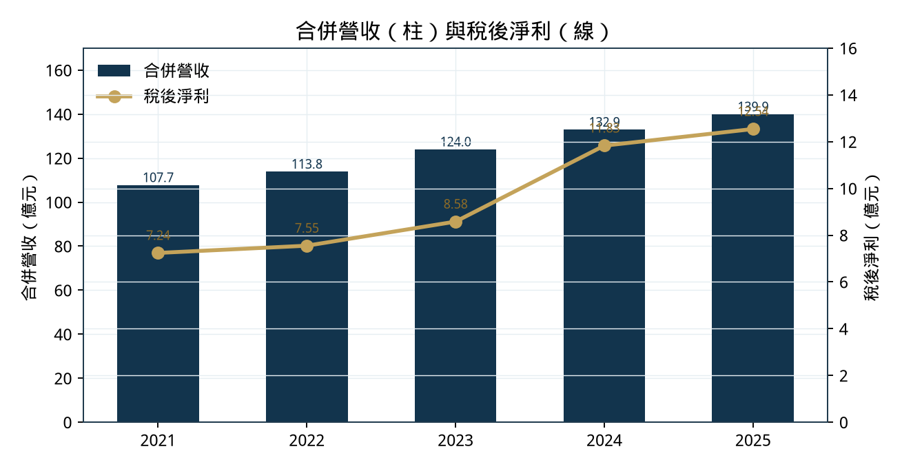
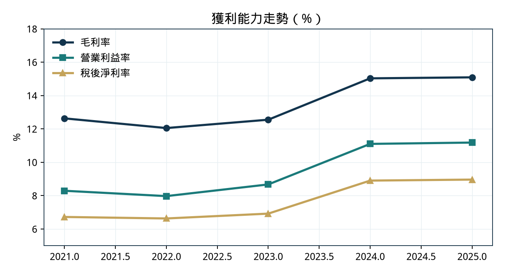
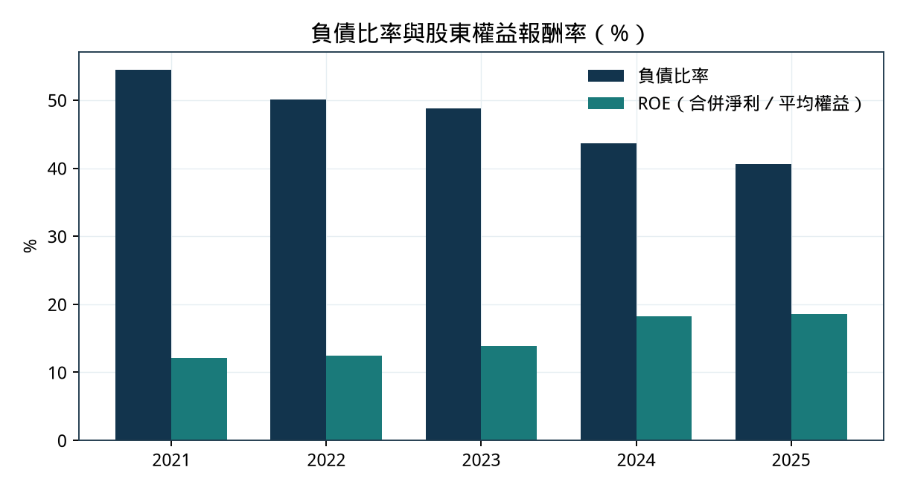
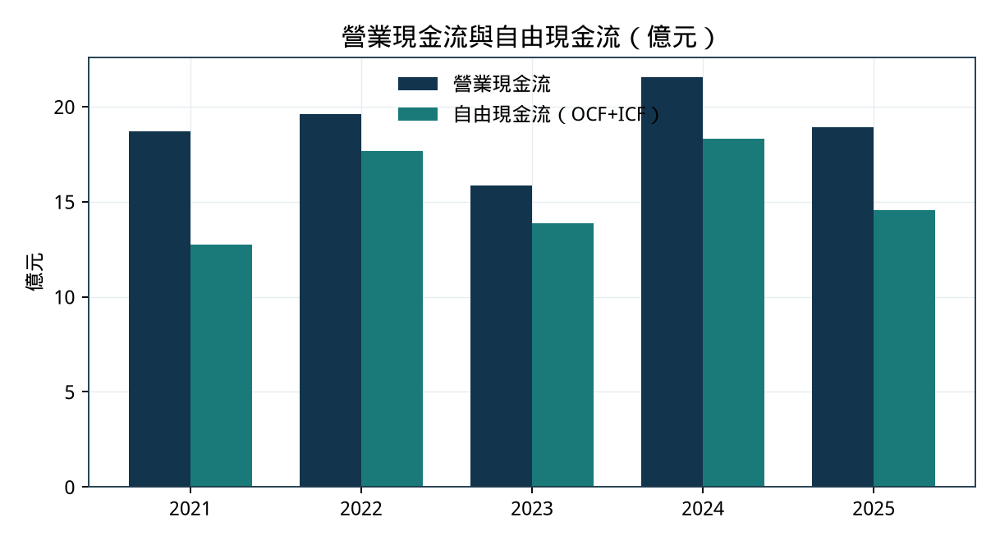
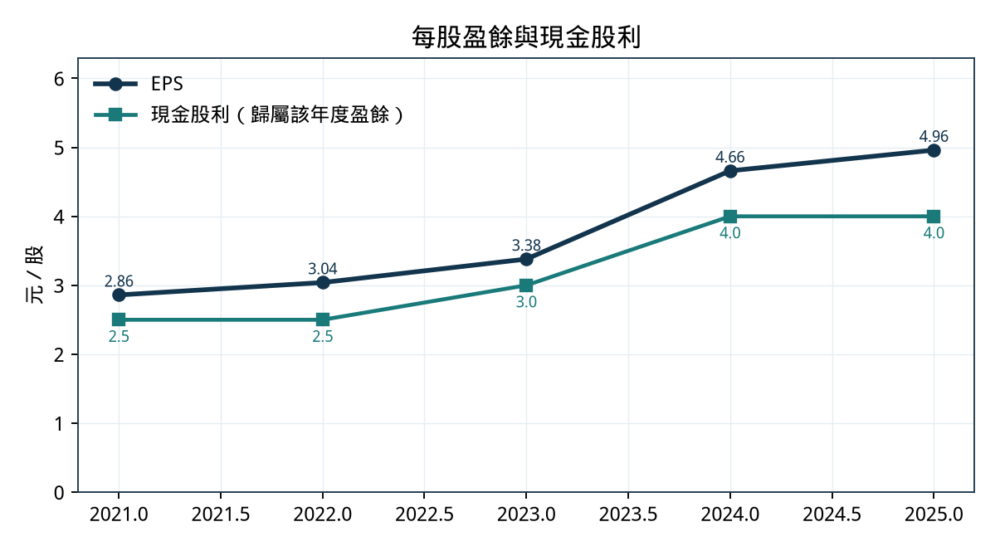
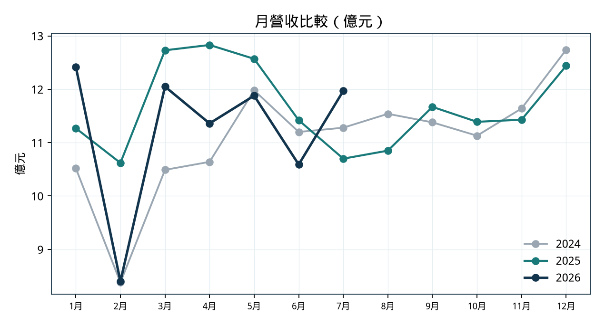

近五年財務分析（2021–2025）
暨公司與產業未來五年前景、全球競爭力報告
截止 2026-08-27 合併報表 公開資料交叉核對
TaiwanStockFinancialStatements 等表，也未呼叫 FinMind／FRED（專案取數凍結仍有效）。
全部量化數字來自公開通道，並以程式加總季報後與官方公告對帳。
主要來源（後文以簡稱引用）：
chc.com.tw/pdf/pst_1150325.pdf）。單位：除另註外，金額為新台幣；財報表為「千元」或「億元」已標明。比率由上表數字計算，四捨五入至小數一位或兩位。
中聯資源是中鋼集團循環經濟平台：上游吃高爐水淬爐石與轉爐石，中游做成爐石粉（GGBFS）與資源再生材料，下游賣給預拌混凝土、公共工程、水泥廠，並處理半導體氟化鈣污泥等人造螢石。台灣爐石粉市占約五成，是區域龍頭、而非全球規模玩家。
近五年財務主軸是「量穩、利潤上台階、負債下降」：合併營收由 2021 年 107.71 億升至 2025 年 139.91 億（CAGR 6.8%）；稅後淨利由 7.24 億升至 12.54 億（CAGR 14.7%）；毛利率在 2024 年跳升至約 15% 後於 2025 年持穩；負債比由 54.4% 降至 40.6%；營業現金流年年覆蓋淨利與高配息。公司 IR 揭露 2022–2025 之 ROE 為 12.5% → 13.8% → 18.3% → 18.6%。
2026 年迄今轉弱：上半年合併營收 66.69 億（年減 6.7%）、本期淨利 5.48 億（年減 19.7%）、EPS 2.16 元（去年同期季報 EPS 合計 2.70 元）；截至 7 月累計營收 78.66 億（年減 4.2%），但 7 月單月年增 11.9%。近四季 EPS 約 4.42 元，本益比 14.41、股價淨值比 2.56、現金殖利率 6.28%（股利年度 114、現金股利 4.0 元）。
1991-05-25 設立，1999-11-22 上市。主要股東（FinLab 轉述 2025-12-31 前十大）含中鋼 19.83%、台泥 12.15%、中鋼構 9.33%、亞泥 9.17%、環泥 6.85%、中碳 6.04%、東南水泥 5.26%。股權同時鎖住料源（中鋼體系）與膠結材通路（水泥同業），這是護城河，也是議價結構上的雙面刃。
法說將業務分為兩塊：
MoneyDJ 整理之 2024 年營收比重：高爐石粉 41%、飛灰爐石粉 0.6%、高爐水泥 3%、特殊用途材料 5%、資源再生 42%。主要轉投資：中聯越南（爐石粉，法說列年營收 12.5 億）、聯鋼開發（鐵粉／耐火材，4.0 億）、寶固實業（飛灰買賣等，1.7 億）。
GGBFS 是高爐熔渣急冷後研磨的輔助膠結材，可部分取代波特蘭水泥、降低混凝土蘊含碳。CSC 公開說明：每噸爐石粉碳排放約 50 kg CO2，對比水泥約 880 kg；中鋼＋中龍水淬爐石年約 420 萬噸；台灣年耗水淬爐石若以 600 萬噸計，集團稱可滿足國內約七成需求。中聯自身 comms／媒體轉述爐石粉年產能約 300–340 萬噸、台灣市占約五成、轉爐石處理約 150–220 萬噸——後者非 MOPS 財報欄位，作產業背景而非已審計產量。

| 年度 | 營收 億元 | YoY | 毛利 億元 | 毛利率 | 營業利益 億元 | 營益率 | 稅後淨利 億元 | 淨利率 | EPS 元 |
|---|---|---|---|---|---|---|---|---|---|
| 2021 | 107.71 | — | 13.61 | 12.6% | 8.93 | 8.3% | 7.24 | 6.7% | 2.86 |
| 2022 | 113.83 | +5.7% | 13.71 | 12.0% | 9.07 | 8.0% | 7.55 | 6.6% | 3.04 |
| 2023 | 123.95 | +8.9% | 15.56 | 12.6% | 10.74 | 8.7% | 8.58 | 6.9% | 3.38 |
| 2024 | 132.91 | +7.2% | 19.97 | 15.0% | 14.75 | 11.1% | 11.83 | 8.9% | 4.66 |
| 2025 | 139.91 | +5.3% | 21.12 | 15.1% | 15.64 | 11.2% | 12.54 | 9.0% | 4.96 |
來源：HiStock 單季損益加總；2025 年與 MOPS 114 年度公告一致。EPS 為基本 EPS。2025 歸屬母公司淨利 12.331 億（MOPS），非控制權益約 0.21 億。
解讀：


| 年底 | 總資產 | 流動資產 | 總負債 | 流動負債 | 權益合計 | 負債比 | 流動比 | ROE* |
|---|---|---|---|---|---|---|---|---|
| 2021 | 131.29 | 27.99 | 71.44 | 27.63 | 59.85 | 54.4% | 101% | 12.1% |
| 2022 | 122.67 | 22.83 | 61.49 | 26.77 | 61.18 | 50.1% | 85% | 12.5% |
| 2023 | 122.71 | 27.52 | 59.86 | 28.02 | 62.85 | 48.8% | 98% | 13.8% |
| 2024 | 118.03 | 28.47 | 51.49 | 23.58 | 66.54 | 43.6% | 121% | 18.3% |
| 2025 | 114.96 | 29.43 | 46.69 | 22.62 | 68.27 | 40.6% | 130% | 18.6% |
單位億元。負債比＝總負債／總資產。流動比＝流動資產／流動負債。ROE*：2022–2025 採用公司 IR（12.5／13.8／18.3／18.6%）；2021 為合併淨利／年底權益（無 2020 年底權益，故非平均）。2025 年底歸屬母公司權益 65.94 億（MOPS），與權益合計之差為非控制權益 2.33 億。
五年總資產減少約 16.3 億（−12.4%），總負債減少 24.7 億（−34.6%），權益增加 8.4 億。這是以獲利與現金流還債、而非靠增資撐 ROE。固定資產帳面由 2021 年底 76.6 億降至 2025 年底 44.3 億（HiStock「固定資產」欄；2023 年起部分項目重分類至「其餘資產」，解讀時勿把欄位跳動當成實質大砍產能）。流動比自 2022 年低點 85% 回升至 2025 年 130%，短期償債壓力下降。
公司 IR 同步揭露 ROA：2022–2025 為 6.4% → 7.6% → 10.3% → 11.1%。資產報酬與權益報酬同步上台階，與 2024 利潤率跳升一致，不是單純槓桿遊戲。

| 年度 | 營業現金流 | 投資現金流 | 自由現金流 | 融資現金流 | OCF／淨利 |
|---|---|---|---|---|---|
| 2021 | 18.70 | −6.00 | 12.74 | −14.64 | 2.58x |
| 2022 | 19.60 | −1.92 | 17.67 | −18.78 | 2.60x |
| 2023 | 15.84 | −1.96 | 13.88 | −13.02 | 1.85x |
| 2024 | 21.53 | −3.21 | 18.32 | −16.48 | 1.82x |
| 2025 | 18.91 | −4.33 | 14.57 | −15.78 | 1.51x |
單位億元。季報現金流加總（HiStock）；自由現金流＝營業＋投資（投資流出為負）。2025 投資流出擴大，與南部研磨廠擴建時點相符，屬資本支出而非營運惡化。
五年合計營業現金流約 94.6 億、自由現金流約 77.2 億、融資淨流出約 78.7 億——融資端主要是還債與配息。OCF 始終高於會計淨利，獲利品質佳；2025 年 OCF／淨利降至 1.51x，仍屬健康，需盯營運資金與擴建現金是否在 2026–2028 繼續墊高投資流出。

| 盈餘年度 | EPS | 現金股利 | 配發率 | 董事會／公告時點（財報狗） |
|---|---|---|---|---|
| 2021 | 2.86 | 2.50 | 87% | 2022-02-24 公告 |
| 2022 | 3.04 | 2.50 | 82% | 2023-02-23 公告 |
| 2023 | 3.38 | 3.00 | 89% | 2024-02-26 公告 |
| 2024 | 4.66 | 4.00 | 86% | 2025-02-26 公告 |
| 2025 | 4.96 | 4.00 | 81% | 2026-02-25 公告；除息 2026-06-24 |
連續多年純現金、高配發，符合「成熟現金牛＋集團循環平台」定位。2025 盈餘配發率略降至 81%（公司 IR 亦寫 81%），仍把大部分盈餘還給股東。以 2026-08-26 收盤 63.70 計，4.0 元現金殖利率 6.28%，與證交所 BWIBBU 公布值一致。高配息的代價是內部留存有限，未來兩座研磨廠擴建須靠營運現金與既有負債空間，而非大幅降低股利——這是資本配置上已揭示的取捨。

| 期間 | 營收 | 毛利 | 營業利益 | 本期淨利 | 母公司淨利 | EPS |
|---|---|---|---|---|---|---|
| 2025 H1 | 71.44 | 11.19 | 8.60 | 6.82 | — | 2.70* |
| 2026 H1（MOPS） | 66.69 | 9.49 | 6.53 | 5.48 | 5.37 | 2.16 |
| 變動 | −6.7% | −15.2% | −24.1% | −19.7% | — | −20% |
單位億元。2025 H1 由 Q1+Q2 季報加總；2026 H1 為 2026-08-06 董事會通過之合併數。EPS* 為 HiStock 單季 EPS 1.33+1.37。2026 H1 毛利率 14.2%、營益率 9.8%、淨利率 8.2%，低於 2025 全年 15.1／11.2／9.0%。期末負債比 43.2%，較 2025 年底 40.6% 回升（除息後權益下降為主因之一：母公司權益 65.94→61.85 億）。
| 構面 | 近五年事實 | 評語 |
|---|---|---|
| 成長 | 營收 CAGR 6.8%，淨利 CAGR 14.7% | 利潤成長快於營收，2024 為跳升年 |
| 獲利品質 | OCF 持續 > 淨利；業外不大 | 本業現金賺得到 |
| 結構 | 負債比 54%→41%；流動比回升 | 資產負債表變乾淨 |
| 股東回報 | 配發率 81–89%；殖利率約 6% | 現金牛；留存薄 |
| 周期位置 | 2026 H1 營收、利潤率雙降 | 高點已過，進入回測 |
以下區分：①公司與政府已揭露事實；②self-reported 情境判斷。不編造未揭露的 EPS 目標。
推力一：碳定價讓爐石粉的「減碳價差」從敘事變成成本項。台灣碳費於 2025 年開始計費、2026 年開徵，標準費率每噸 300 元；高碳洩漏產業（含鋼鐵、水泥）可申請優惠，台泥等已取得最低檔約 50 元／噸。政策研究指 2030 年費率討論區間約 1,200–1,800 元／噸，並規劃 CBAM 台式與 ETS 試點。以目前 300 元計，對水泥的經濟誘因仍遠低於歐盟 ETS（2025 年底約 €83／噸量級），故近兩年是「規範與採購規格驅動」大於「碳費金額驅動」；若費率真往四位數走，GGBFS 替代誘因會非線性放大。
推力二：飛灰供給結構性下降。電廠燃煤改燃氣，飛灰減少，預拌業改以爐石粉補輔助膠結材缺口。這是公司連續兩年法說的供給面主軸，屬能源轉型的副產品，持續性高於單一景氣循環。
推力三：公共工程與科技廠房對沖房市。法說引主計總處：2026 年公共建設相關預算總額 6,704 億（+5.6%），其中公共建設計劃 2,883 億（+14.9%）。半導體／AI 廠房擴建帶廢棄物處理與混凝土需求。拉力則很明確：2025 年建造執照樓地板面積 32,975 千 m²（−17.4%）、開工 29,697 千 m²（−9.0%）；央行信用管制、土方新制、缺工、電價。公司自己說土方問題「預計需 2–3 年」。這解釋了 2026 上半年營收與毛利的回落，也框住民間建築需求的修復速度。
GGBFS 不是「想產就能產」。原料綁在高爐煉鐵。全球電爐（EAF）占比上升，長期會收縮水淬爐石供給，讓既有高爐渣「越磨越貴」。台灣版本更具體：中鋼董事會通過壹號高爐最遲 2029 年第 1 季除役，粗鋼產能約減 150 萬噸（約一成），策略從衝量改為「最適產量」。中鋼＋中龍水淬爐石年約 420 萬噸，是中聯最大料源。
對中聯的含義（self-reported）：
| 計畫 | 董事會／啟動 | 規模 | 預計投產 | 公司表述之目的 |
|---|---|---|---|---|
| 南部研磨廠增建 | 2024 啟動 | +48 萬噸／年 | 2026Q4 | 離峰生產降電費、供貨彈性 |
| 中部研磨廠增建 | 2025-11 通過 | +58 萬噸／年 | 2028Q3 | 中部市場與調度 |
| 中聯越南 | 場地已預留 | 2025 產量近 70 萬噸、近滿載 | 未核准擴建 | 視原料與市場再決定 |
兩案合計 +106 萬噸，相對台灣爐石粉年需求約 600 萬噸、中聯既有約 300–340 萬噸產能，是顯著但非翻倍的擴張。2026 下半年起折舊與電費結構會改變；若需求跟不上，邊際研磨線可能先用來移尖峰負荷，利用率不必拉滿——這與董事長吳一民在 2026Q1 法說的口徑一致。
中聯越南是目前唯一海外製造據點。法說列年營收 12.5 億（約合合併營收 9%）。2023 起越南營建低迷、水泥產能過剩，水泥價自 2023 年下跌約 20–30%（不同場合表述），壓縮爐石粉價格；公司以產品差異化、降成本、偏遠市場與剛性需求客戶，使 2024 轉虧為盈（法說會紀錄轉述稅後 7,912 萬元），2025 產量近滿載。越南政府基礎建設是長線故事，撥付與營建現金流是短線約束。五年內越南比較像「維持獲利的第二曲線」，不像「量能翻倍的成長引擎」，除非啟動預留擴建。
氟化鈣污泥 → 人造螢石 → 煉鋼助熔劑，把電子業副產接回中鋼製程，這條線的門檻是執照、配方與集團內需，不是產能競賽。科技廠房擴建提高廢棄物處理需求，但公司也承認含硫較高的人造螢石無法取代全部天然螢石。資源再生約四成營收，提供爐石粉景氣的部分下檔保護，但不是高倍數成長故事。
| 情境 | 條件 | 對 2026–2030 營運的含義 |
|---|---|---|
| 基準 | 房市緩慢修復、公共工程與科技廠房撐住量；碳費緩升；中鋼鐵水溫和下降；新產能作調度 | 營收維持高基準、個位數波動；利潤率從 2025 高點回落到 2023–2024 之間再尋找新均衡；配息仍高但跟著 EPS 走 |
| 樂觀 | 碳費／CBAM 明顯升溫、飛灰加速消失、公共工程超配、越南基建兌現、外購渣補上中鋼缺口 | 爐石粉量價齊揚，新產能利用率上升，資源再生受惠科技擴產；獲利有機會再測 2025 高點之上 |
| 保守 | 信用管制延長、土方問題拖延、電價與工資續漲、2029 高爐除役讓渣量掉一截、越南價格戰 | 2026 式的「營收小減、利潤多減」可能再現；研磨擴建變成固定成本負擔；殖利率靠股價而非靠增股利 |
2026 上半年的數字，已經比較接近「基準偏保守」的開局，而不是樂觀開局。南部線 2026Q4 投產後，觀察重點應是毛利率能否止跌與單月營收能否站穩年增，而不是產能新聞本身。
全球 GGBFS 市場的「金額」研報彼此矛盾（約從數億美元到 200 億美元以上，定義與計價差極大），本報告不採用單一金額預測。較可引用的是噸數口徑：TechSci 估 2025 年全球約 4.18 億噸、2031 年約 4.95 億噸（CAGR 約 2.9%）。歐洲 EUROSLAG：2024 年歐盟水泥業使用粒化高爐渣約 2,000 萬噸。中聯若以約 300–340 萬噸爐石粉計，全球噸數市占約 0.7–0.8% 量級——這是台灣第一、全球利基。
全球競爭者分三層：①水泥跨國（Holcim ECOPlanet、Heidelberg、CEMEX）把 GGBFS 當低碳水泥配方；②鋼企礦業臂（JFE Mineral、Nippon Steel、POSCO、Baowu、Tata／JSW）；③獨立研磨與技術商（Ecocem 等超低碳膠結材）。前五大在部分研報中可占全球近半（口徑同樣分歧）。中聯不在這張全球名單的主場。
在台灣循環經濟與低碳混凝土供應鏈，中聯仍是最難被替代的節點之一：料源、執照、股東結構、產能布局互相卡住。在全球 GGBFS／低碳水泥產業，它不是價格制定者，也不是技術前沿的代名詞；競爭力表現為「區域穩健現金流＋碳規章下的產品相關性」，而非市占擴張。
未來五年若要提高全球能見度，現實路徑是：①把越南做成可複製的第二研磨平台（需渣源）；②把人造螢石與轉爐石應用寫進更多國家／城市規範；③與台泥等股東的低碳水泥配方綁得更緊，吃到 CBAM 與碳費的衍生需求。這些都不是自動發生。
| 風險 | 機制 | 可能時點 | 觀察指標 |
|---|---|---|---|
| 高爐渣減量 | 中鋼壹號高爐除役、最適產量 | 2028–2029 | 中鋼鐵水／水淬爐石產出、中聯外購渣占比 |
| 建築周期 | 信用管制、土方、缺工 | 已在 2026 H1 顯現 | 建照／開工、月營收年增、毛利率 |
| 電價與碳費不對稱 | 研磨是電費密集；碳費過低則替代誘因弱 | 持續 | 台電電價、碳費費率、離峰產線利用率 |
| 擴建固定成本 | +106 萬噸折舊與人力 | 2026Q4 起、2028Q3 再一波 | 單位費用、產能利用率 |
| 越南水泥過剩 | 價格戰回頭壓爐石粉 | 已存在 | 子公司損益、當地水泥價 |
| 議價結構 | 大股東即供應商／客戶 | 結構性 | 毛利率、關連人交易揭露 |
| 政策節奏 | 高碳洩漏優惠使碳費過「軟」 | 2026–2027 | 實際繳費單價、綠色採購占比 |
中聯資源近五年交出的是一份優質現金牛升級的成績單：營收穩步走高，2024 年利潤率台階化，負債下降，配息大方，2025 年 EPS 4.96 元為近年高峰。這份成績建立在公共工程、科技擴產、爐石粉低碳屬性與資源再生勞務上，不是一次性業外。
2026 年的財報正在提醒：高峰之後，民間建築與成本會把利潤率拉回。公司選擇在這個時點把研磨產能鋪到 2028 年，賭的是碳規章與飛灰缺口的中期需求，以及電費結構，而不是明年就要填滿每一噸新產能。
產業未來五年，全球 GGBFS 是「需求被減碳推著走、供給被煉鋼減碳勒著走」的緊平衡；台灣版本還多一個中鋼高爐除役的明確時間點。中聯的全球競爭力是節點型、區域型的：在島內循環鏈上很難被繞過，在世界噸數榜上並不重要。投資或產業研究若把 9930 當成「台灣版 Holcim」，尺度會錯；把它當成「中鋼體系最乾淨的循環現金流＋碳時代的膠結材保險」，比較贴近過去五年的數字與未來五年的約束。
t187ap03_L：9930 基本資料（出表 1150826）。t187ap05_L：115 年 7 月營收 1,197,342 千元；累計 7,866,380 千元（−4.23%）。https://www.chc.com.tw/pdf/pst_1150325.pdf。文件產出：2026-08-27 ｜ 檔名：chc_9930_financial_outlook_20260827 ｜ Augur 工作區研究備忘